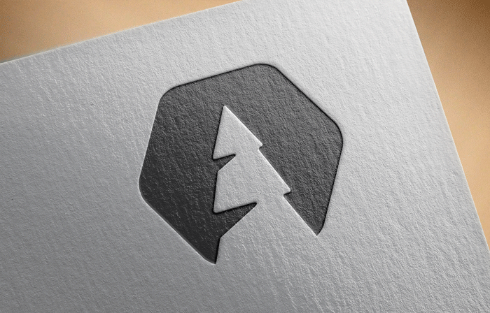
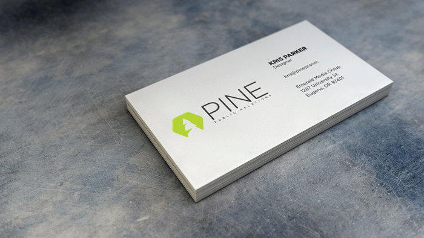
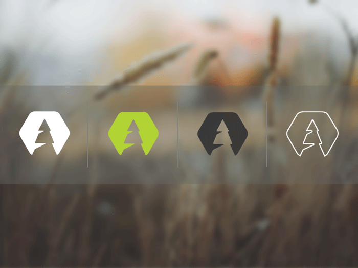
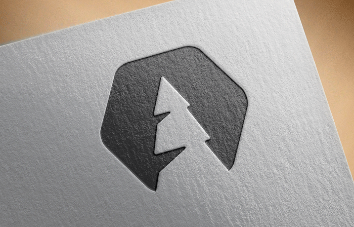
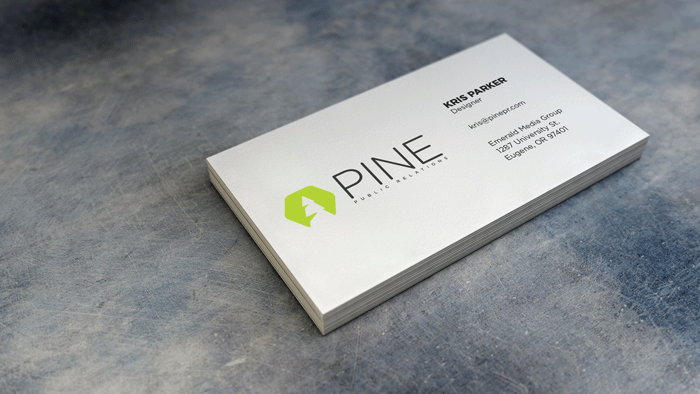
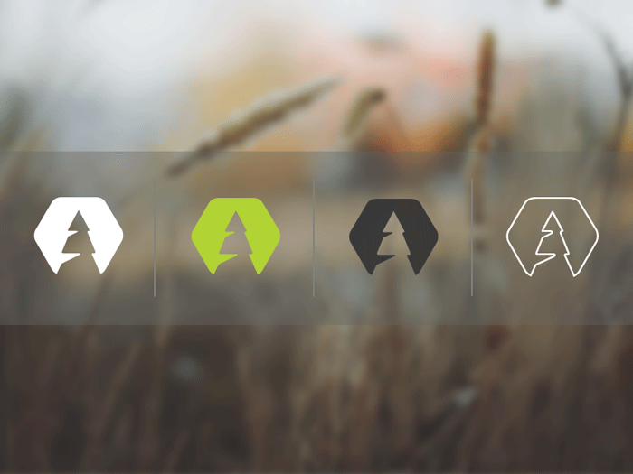

Pine Public Relations
Branding the newest member of the team
The Challenge:
The Emerald Media Group is an independent news group on campus that has produced the school newspaper for over 100 years. As print readership declined the organization needed new revenue streams to support the paper as it transitioned to a digital first platform. The Venture Dept. was the first solution to that problem, and Pine PR was the second. Pine needed an identity that stayed true to the exsisting Emerald brand, while also positioning itself as the premier student PR group on campus.
The Solution:
A logo that's recognizable, functional and bare bones simple. I started with the icon and experimenting with different shapes. Oringinally the client was thinking of a pinecone, but after tons of exploration we decided the pinetree was a better fit. The logotype is set in Gotham Rounded. (Can you really go wrong with Gotham?)
 




